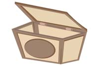

Gestión de bases de datos: relacionales y orientadas a objetos. Persistencia de objetos.
Caso práctico
Ada ha asignado un proyecto a María y a Juan. Se trata de un proyecto importante, puede suponer muchas ventas, y por tanto una gran expansión para la empresa.
En concreto, un notario de renombre en el panorama nacional, se dirigió a BK programación para pedirles que les desarrolle un programa para su notaría, de modo que toda la gestión de la misma, incluyendo la emisión de las escrituras, se informatizaran. Además, si el programa es satisfactorio, se encargará de promocionar la aplicación ante el resto de sus conocidos notarios, pudiendo por tanto suponer muchas ventas y por ello, dinero.
Una cuestión vital en la aplicación es el almacenamiento de los datos. Los datos de los clientes, y de las escrituras deberán guardarse en bases de datos, para su tratamiento y recuperación las veces que haga falta.
Como en BK programación trabajan sobre todo con Java, desde el primer momento Juan y María tienen claro que van a tener que utilizar bases de datos relacionales y JDBC y así lo comentan con Ada.
Casi todos los programas hoy día tienen la opción de guardar los datos con los que se trabaja.
Hasta ahora, ya conoces cómo abrir un archivo y utilizarlo como “almacén” para los datos que maneja tu aplicación. Utilizar un archivo para almacenar datos es la forma más sencilla de persistencia, porque en definitiva, la persistencia es hacer que los datos perduren en el tiempo.
Hay muchas formas de hacer los datos de una aplicación persistentes, y muchos niveles de persistencia. Cuando los datos de la aplicación solo están disponibles mientras la aplicación se está ejecutando, tenemos un nivel de persistencia muy bajo.
Es deseable que los datos de nuestra aplicación tengan el mayor nivel de persistencia posible.
Tendremos un mayor nivel de persistencia si los datos “sobreviven” a varias ejecuciones, o lo que es lo mismo, si nuestros datos se guardan y luego son reutilizables con posterioridad. Tendremos un nivel todavía mayor si “sobreviven” a varias versiones de la aplicación, es decir, si guardo los datos con la versión 1.0 de la aplicación y luego puedo utilizarlos cuando esté disponible la versión 2.0.
Ya hemos visto varias formas de hacer los datos de una aplicación persistentes, mediante ficheros, en una unidad anterior. Ahora, en esta unidad, vamos a ver la forma de almacenar los datos en una base de datos de dos formas: primeramente en una base de datos relacional, y después veremos cómo se haría con bases de datos orientadas a objetos.


 Esta mañana, Juan ha preparado una serie de sistemas de bases de objetos diferentes, para instalarlos e ir probando algunas de sus características. La empresa tiene el encargo de hacer una pequeña aplicación que sirva para gestionar las ponencias de un congreso que se va a realizar próximamente, y podría ser una buena opción de utilizar una base de datos orientada a objetos como sistema de almacenamiento de la información.
Esta mañana, Juan ha preparado una serie de sistemas de bases de objetos diferentes, para instalarlos e ir probando algunas de sus características. La empresa tiene el encargo de hacer una pequeña aplicación que sirva para gestionar las ponencias de un congreso que se va a realizar próximamente, y podría ser una buena opción de utilizar una base de datos orientada a objetos como sistema de almacenamiento de la información.


{kind=link}
{kind=link}
{kind=link}
{kind=link}
{kind=link}
{kind=link}
{kind=link}
{kind=link}
{kind=link}
{kind=link}